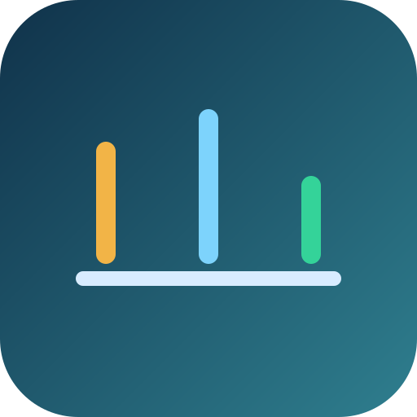

Learn when to page, when to warn, and when to debug. The operating pattern is simple: SLO alerts for paging, threshold alerts for early warning.
SLO alerts and threshold alerts answer different questions, so they should route to humans differently.

These distinctions keep paging tied to user pain instead of raw infrastructure noise.
They page when reliability objectives are burning too fast and users are likely feeling it.
They are strong early warnings and usually route to Slack, ticketing, or office-hours investigation.
SLO alerts drive paging. Threshold alerts help prevent incidents and speed diagnosis.
Use supporting signals to understand why saturation, latency, or burn changed.
The routing rule depends on burn rate, impact, and whether the condition is sustained across windows.
Only SLO alerts should page humans. Threshold alerts should inform humans so teams can prevent incidents earlier.